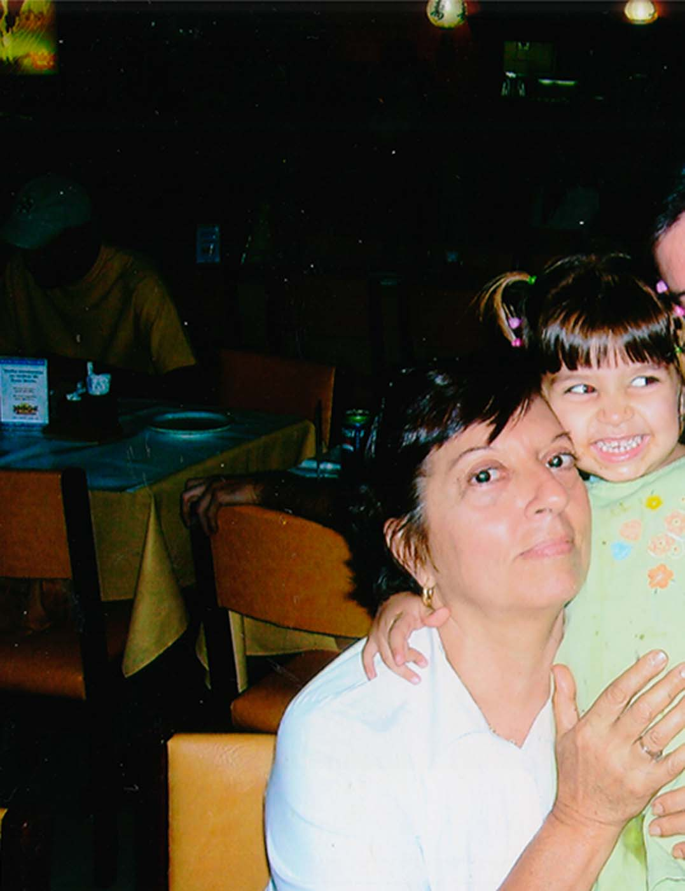

conhecendo
Olá, meu nome é Manuela, mas pode me chamar de Nunu. Esse site foi criado para a aula de Práticas Experimentais III do curso de Design da PUC-Rio e aqui é um local de memória, saudade e conforto. Boa viagem, pequeno aventureiro!!
.
.
.
Meus avós são uma grande inspiração para mim, adoro ouvir as histórias que me contavam desde criança sobre nossa família. Queria poder compartilhar ao menos um pouco disso com o mundo e decidi assim criar esse acervo, que, para além de fotos, também é um acervo de fatos sobre a nossa família e sobre o Brasil da visão deles. Aqui é um local para preservar a memória das pessoas mais importantes da minha vida e poder apresentar histórias reais para um mundo tão artifical. Quero que seja um local onde minha avó possa reencontrar o amor de sua vida quantas vezes quiser.
Essa é minha avó

Ela se chama Cidália, mas pode chamá-la de Cida. Ela nasceu em Portugal, em uma pequena aldeia chamada Cortiçô, no dia 27 de julho de 1945. Quando completava 4 anos, veio ao Brasil com sua mãe, sua avó e sua tia. Considerada brasileira por muitos portugueses, ela sempre foi muito apegada ao Brasil, aqui foi onde ela estudou no colégio, aprendeu a costurar, a tocar seu amado acordeão. Foi também onde conheceu o grande amor de sua vida, Antônio, onde teve suas duas filhas e seus três netos. Sua família veio pro Brasil com a esperança de um futuro melhor, o que resultou em muitos anos de trabalho, porém com retornos gratificantes.
Esse é o meu avô

Ele se chama Antônio, mas pode chamá-lo de Tuna. Ele também nasceu em Portugal, na mesma pequena aldeia de Cortiçô, no dia 19 de outubro de 1939. Veio ao Brasil com 18 anos, com ajuda de sua tia, para que não precisasse servir ao exército e ir para guerras que estavam acontecendo na época e que ceifaram amigos próximos. Quando chegou ao Brasil, precisou trabalhar muito para se sustentar e teve grande ajuda de membros da família. Quando conheceu minha avó, ela ainda era nova, então esperou até que ela estar mais velha e foi trabalhando para poder comprar uma casa e tivesse dinheiro para sustentar os dois. No início foi considerado um caipira por ela, mas quando se conheceram melhor, foi um amor tão forte que ficaram juntos por toda a vida. Viajavam juntos pelo país e sempre voltavam para a amada terra de Cortiçô. Seu sonho era poder voltar a morar em Portugal e poder levar seus netos para conhecerem a aldeia da família, mas infelizmente, acabou falecendo em 2014. Mesmo após sua morte seu sorriso continua trazendo alegria a todos que veem. Seu amor por fotografias foi o que ajudou com que sua memória nunca se fosse.

Cida, Nunu e Tuna. Comemorando o aniversário de Tuna.
Casinha